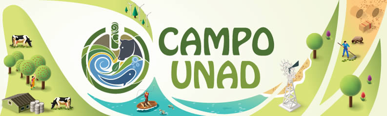

CAMPOUNAD
"Sembrando un País en Red para la Paz"
"Sembrando un País en Red para la Paz"
Oprima aquí para descargar en su dispositivo móvil la plataforma CAMPOUNAD, una aplicación para fomentar el desarrollo rural en Colombia.
Ver MásUn espacio dispuesto en la red para acceder a contenidos informativos, cursos, agroconsultas, agromediciones, atención primaria en salud para la población rural.
Ver MásAcceda a contenidos audiovisuales a través de la radio, la televisión y documentos de interés para mejorar la productividad y el bienestar.
Ver MásEncuentre aqui la caracterización de su microterritorio para la identificación de nuevas oportunidades de mercados para sus productos.
Ver MásEntérese de la oferta y oportunidades en educación primaria y bachillerato que tiene la UNAD para el campesino y su familia.
Ver MásUna asistencia para acompañarle sobre dudas o inquietudes en el manejo y acceso a la plataforma CAMPOUNAD.
Ver Más